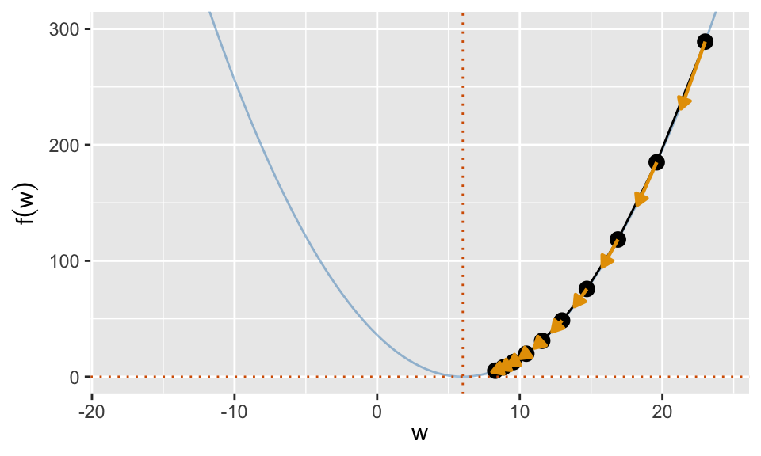
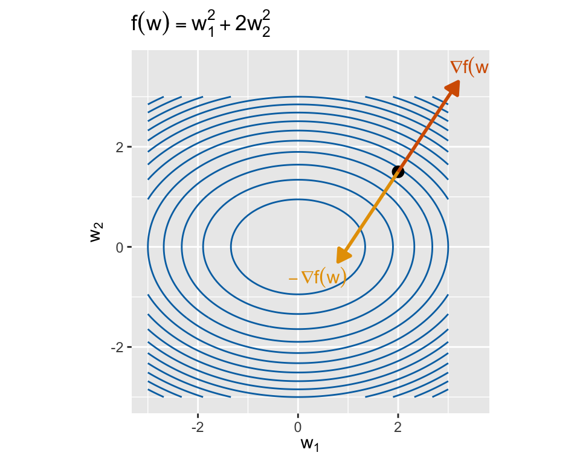
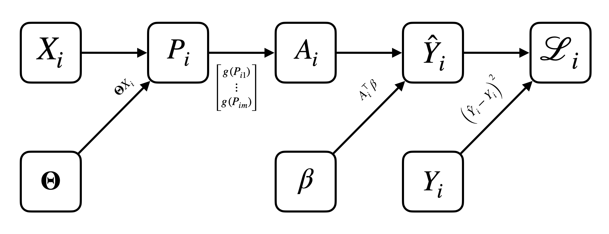
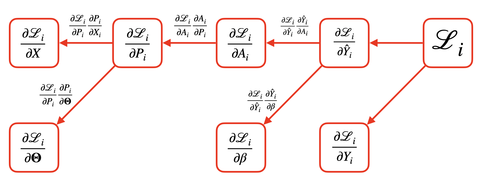
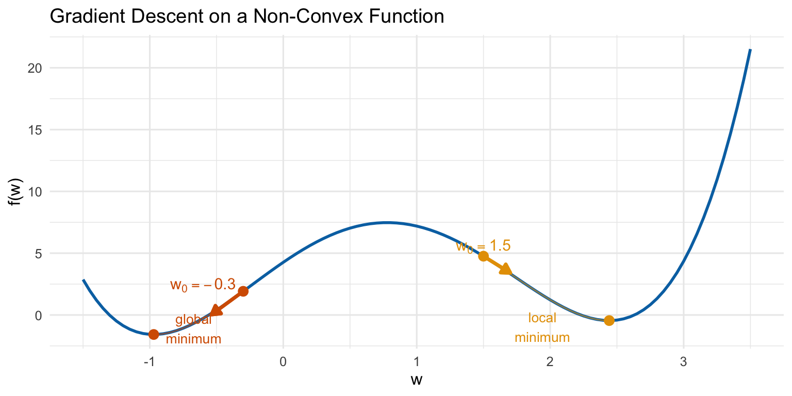
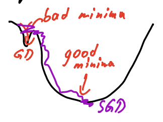

Lecture 19: Gradient Descent and Backpropagation
Learning Objectives
By the end of this lecture, you should be able to:
- Implement the gradient descent algorithm
- Explain the trade-offs involved in choosing the gradient descent step size
- Derive the gradient descent updates for a simple neural network using the chain rule
- Describe the backpropagation algorithm for automatic differentiation
- Explain the challenges of optimizing neural networks and how stochastic gradient descent helps address them
Motivation
- In the last lecture, we introduced neural networks as flexible, non-linear models.
- Neural networks are basis regressors with learned recursively-constructed basis functions, where the basis functions are combined using parameters \(\beta = [\beta_1, \ldots, \beta_M]\).
- These basis functions come from \(L\) layers of linear combinations and non-linear activations, each of which has many learnable parameters \(\Theta^{(1)}, \ldots, \Theta^{(L)}\).
- In this lecture, we will discuss how to fit these parameters to data.
Neural Network Training as an Optimization Problem
(For simplicity, we will assume that we have a one-hidden-layer neural network with two sets of learnable parameters: \(\Theta\) (the hidden layer weights) and \(\beta\) (the final linear combination weights). However, these ideas generalize to deeper networks.)
As with many other predictive models we’ve studied, we fit the neural network parameters using empirical risk minimization.
Given some training data \(\mathcal{D} = \{(x_i, y_i)\}_{i=1}^n\) and some loss function \(\ell(Y, \hat Y)\), the neural network training problem can be written as:
\[ \hat \Theta, \hat \beta = \mathrm{argmin}_{\Theta, \beta} \sum_{i=1}^n \ell\left(y_i, \hat f_\mathcal{D}(x_i; \Theta, \beta)\right) \]
where \(f_\mathcal{D}(x; \Theta, \beta)\) is the neural network’s prediction for input \(x\) given parameters \(\Theta\) and \(\beta\). (We will often omit the dependence on \(\Theta\) and \(\beta\) for brevity.)
Unlike other models we’ve studied (e.g., linear regression, ridge regression), there is no closed-form solution for this optimization problem, and so we must resort to iterative optimization algorithms.
Fitting neural networks with iterative optimization algorithms:
- Before we discuss how to fit neural networks specifically, we will first introduce a general-purpose optimization algorithm called gradient descent which can be used to numerically optimize any differentiable function.
- We will then discuss how to apply gradient descent to fit neural networks, using an automated implementation of the chain rule called backpropagation to compute the necessary gradients.
The Gradient Descent Algorithm
Gradient descent is an iterative optimization algorithm for finding the minimum of a differentiable function \(f(w): \mathbb{R}^d \to \mathbb{R}\).
\[ w^* = \mathrm{argmin}_w f(w) \]
It does not yield a closed-form solution, but instead produces a sequence of approximations that converge to the true function minimum.
The basic idea of the algorithm is simple: we start with an initial guess of the minimizer \(w_0 \approx \mathrm{argmin}_w f(w)\), and then repeatedly update our guess using information from the gradient of \(f\) at the current guess:
NoteThe Gradient Descent Algorithm
Given:
- A differentiable function \(f: \mathbb{R}^d \to \mathbb{R}\) to minimize
- An initial guess \(w_0 \in \mathbb{R}^d\)
- A step size (learning rate) \(\gamma > 0\)
Repeat for \(n = 0, 1, 2, \ldots\) until convergence:
\[ w_{n+1} = w_n - \gamma \nabla f(w_n) \]
As \(n \to \infty\), \(w_n \to w^* = \mathrm{argmin}_w f(w)\) (under suitable conditions on \(f\) and \(\gamma\)).
1D Example
- Here we are minimizing the function \(f(w) = (w - 6)^2\) using gradient descent. (This function has a minimum at \(w = 6\). We could solve it analytically, but this is just for illustration.)
- Our initial guess is \(w_0 = 23\) and we use a step size of \(\gamma = 0.1\).
- The next step is in the direction of the negative gradient at \(w_0\), and it is relatively far away from \(w_0\) because \(\nabla f(w_0)\) is large in magnitude.
- After many iterations, the gradients become small, the updates change \(w\) less, and we converge to the minimum at \(w = 6\).
Intuition
The gradient is a good heuristic to guide our search for the minimum of \(f(w)\). It contains information in both its direction and its magnitude.
What the direction tells us:
- The direction of our gradient \(\nabla f(w)\) tells us the direction of steepest ascent.
- If we update \(w\) in the negative gradient direction \(-\nabla f(w)\), we are moving \(w\) in the most efficient direction to reduce \(f(w)\).

What the magnitude tells us:
- If \(\Vert \nabla f(w) \Vert\) is large, then \(f(w)\) changes rapidly near \(w\). It is unlikely that our current guess \(w\) is close to the minimum, and so we should move a larger distance to reach a better guess.
- If \(\Vert \nabla f(w) \Vert \approx 0\), then we are near a stationary point of \(f\) (likely a minimum). We should take smaller steps to avoid overshooting the minimum.
The step size \(\gamma\)
The step size \(\gamma\) is a hyperparameter that controls how far we move in the negative gradient direction at each iteration.
A smaller \(\gamma\) means smaller steps, which can lead to more stable convergence but may take longer to reach the minimum.
A larger \(\gamma\) means larger steps, which can speed up convergence but risks overshooting the minimum.
TipWhy would larger steps risk overshooting the minimum?- Imagine that we are very close to the minimum of \(f(w)\), and \(\Vert \nabla f(w) \Vert = 0.1\).
- If we use \(\gamma = 1000\), then our update would move \(w\) by \(1000 \times 0.1 = 100\) units, which is likely to take us far away from the minimum.
In general, it is useful to decay the step size throughout the course of gradient descent, as we get closer to the minimum.
TipWhy should we decay the step size?- Early in the optimization, we want to take larger steps to make rapid progress toward the minimum.
- As we get closer to the minimum, we want to take smaller steps to fine-tune our solution and avoid overshooting.

- There are many strategies for choosing the appropriate step size/decay rate.
- For neural networks, it is common to treat these as hyperparameters and tune them using validation data.
- There are also many adaptive step size algorithms (e.g., Adam, RMSProp) that adjust the step size automatically during training.
Mathematical Justification: Taylor Expansions
A more rigorous justification of gradient descent comes from the Taylor expansion of \(f(w)\) around \(w_0\).
Our goal is to approximate \(f(w)\) with a function that we can minimize in closed form.
Consider the first-order Taylor expansion of \(f(w)\) around \(w_0\):
\[ f(w) \approx f(w_0) + \nabla f(w_0)^\top (w - w_0) \]
This linear approximation is only good for \(w\) close to \(w_0\), i.e. when
\[ \|w - w_0\| < \alpha \quad \text{for some } \alpha. \]
We can thus update our guess \(w\) by minimizing this linear approximation within the region where it is “good”:
\[ \begin{aligned} w_1 &= \mathrm{argmin}_{w} \left[ f(w_0) + \nabla f(w_0)^\top (w - w_0) \right] \\ &= \text{(subject to } \|w - w_0\| < \alpha \text{)} \end{aligned} \]
As with ridge regression, this constrained optimization can be written in a Lagrangian form:
\[ \mathrm{argmin}_{w} f(w_0) + \nabla f(w_0)^\top (w - w_0) + \lambda \|w - w_0\|^2 \]
where \(\lambda > 0\) is some constant that depends on the constraint \(\alpha\).
This optimization problem has a closed-form solution:
\[ w_1 = w_0 - \frac{1}{2\lambda} \nabla f(w_0) \]
which is our gradient descent update with step size \(\gamma = \frac{1}{2\lambda}\)!
Stopping Criteria
For some small tolerance \(\epsilon > 0\) (e.g., \(\epsilon = 10^{-6}\)), we can check any/all of the following conditions:
- Gradient magnitude: \(\|\nabla f(w^{(k)})\| < \epsilon\)
- Stop when the gradient is nearly zero (i.e., we are close to a stationary point).
- Step size: \(\|w^{(k)} - w^{(k-1)}\| < \epsilon\)
- Stop when successive iterates are very close to each other.
- Function value change: \(|f(w^{(k)}) - f(w^{(k-1)})| < \epsilon\)
- Stop when the function value stops changing significantly.
These criteria may or may not indicate that we have reached the global minimum (especially if we are optimizing a non-convex function), but it is a sign that we have nearly reached a local minimum or stationary point.
Gradient Descent for Neural Networks
Now we can apply gradient descent to fit neural networks!
Recall that we want to minimize the empirical risk:
\[ \hat \Theta, \hat \beta = \mathrm{argmin}_{\Theta, \beta} \sum_{i=1}^n \ell\left(y_i, \hat f_\mathcal{D}(x_i; \Theta, \beta)\right) \]
Assuming we’re using the squared error loss \(\ell(y, \hat y) = (y - \hat y)^2\) and a one-hidden-layer neural network, this optimization problem becomes:
\[ \mathrm{argmin}_{\theta_1, \ldots, \theta_m, \beta_1, \ldots, \beta_m} \mathcal L, \qquad \mathcal L = \sum_{i=1}^n \left( Y_i - \sum_{j=1}^m \beta_j g(\theta_j^\top X_i) \right)^2 \]
The gradient descent updates for the parameters are:
\[ \theta_j^{(k+1)} = \theta_j^{(k)} - \gamma \frac{\partial \mathcal L}{\partial \theta_j} \bigg|_{\theta_j = \theta_j^{(k)}}, \quad \beta_j^{(k+1)} = \beta_j^{(k)} - \gamma \frac{\partial \mathcal L}{\partial \beta_j} \bigg|_{\beta_j = \beta_j^{(k)}} \]
So we need to compute the gradients \(\frac{\partial \mathcal L}{\partial \theta_j}\) and \(\frac{\partial \mathcal L}{\partial \beta_j}\).
Returning to calculus, we can compute these gradients using the chain rule. Let’s walk through the process in gory detail so that we can see the algorithmic pattern emerge.
Computing the Gradients via the Chain Rule
- Let’s recall our 1D diagram of a one-hidden-layer neural network with \(m\) hidden units:

- Let’s write \(\mathcal L\) in terms of numerous intermediate variables to make the chain rule application clearer:
TipNeural Network Forward Pass
- For \(i = 1, \ldots, n\)
- \(P_i = \overbrace{\Theta}^{m \times p} \overbrace{X_i}^{p \times 1} \in \mathbb R^m\)
- \(A_i = \vec{g}(P_i) = \begin{bmatrix} g(P_{i1}) \\ \vdots \\ g(P_{im}) \end{bmatrix} \in \mathbb R^m\)
- \(\hat Y_i = \beta^\top A_i \in \mathbb R\)
- \(\mathcal L_i = (Y_i - \hat Y_i)^2\)
- Overall loss: \(\mathcal L = \sum_{i=1}^n \mathcal L_i\)
We will focus on computing \(\frac{\partial \mathcal L}{\partial \Theta}\) first. Begin by noting that
\[ \frac{\partial \mathcal L}{\partial \Theta} = \sum_{i=1}^n \frac{\partial \mathcal L_i}{\partial \Theta} \]
Now let’s consider computing \(\frac{\partial \mathcal L_i}{\partial \Theta} = \frac{\partial \mathcal L_i}{\partial P_i} \frac{\partial P_i}{\partial \Theta}\).
The second term is easy:
\[ \frac{\partial P_i}{\partial \Theta} = X_i^\top \]
The first term is more complex, but we can always apply the chain rule again:
\[ \frac{\partial \mathcal L_i}{\partial P_i} = \frac{\partial \mathcal L_i}{\partial A_i} \frac{\partial A_i}{\partial P_i} \]
Again, \(\frac{\partial A_i}{\partial P_i}\) is easy:
\[ \frac{\partial A_i}{\partial P_i} = \mathrm{diag}\left( g'(P_{i1}), \ldots, g'(P_{im}) \right) \]
For the remaining term, we again recursively apply the chain rule:
\[ \frac{\partial \mathcal L_i}{\partial A_i} = \frac{\partial \mathcal L_i}{\partial \hat Y_i} \frac{\partial \hat Y_i}{\partial A_i} \]
We repeat this recursion until we reach the “end” of the computational graph, when all terms are easy to compute.
If we implement this recursion in practice, we’ll start by computing the gradients at the end of the computational graph (i.e., \(\frac{\partial \mathcal L_i}{\partial \hat Y_i}\)), and then propagate these gradients backwards to compute earlier gradients via the chain rule.
TipNeural Network Backward Pass
- For \(i = 1, \ldots, n\)
- \(\frac{\partial \mathcal L_i}{\partial A_i} = \frac{\partial \mathcal L_i}{\partial \hat Y_i} \underbrace{\frac{\partial \hat Y_i}{\partial A_i}}_{\beta^\top}\)
- \(\frac{\partial \mathcal L_i}{\partial P_i} = \frac{\partial \mathcal L_i}{\partial A_i} \underbrace{\frac{\partial A_i}{\partial P_i}}_{\mathrm{diag}\left( g'(P_{i1}), \ldots, g'(P_{im}) \right)}\)
- \(\frac{\partial \mathcal L_i}{\partial \Theta} = \frac{\partial \mathcal L_i}{\partial P_i} \underbrace{\frac{\partial P_i}{\partial \Theta}}_{X_i^\top}\)
- Overall gradient: \(\frac{\partial \mathcal L}{\partial \Theta} = \sum_{i=1}^n \frac{\partial \mathcal L_i}{\partial \Theta}\)
(Repeat an analogous process to compute \(\frac{\partial \mathcal L}{\partial \beta}\).)
Backpropagation and Computation Graphs
- This process we just described is called backpropagation.
- Note how we broke up the computation of the neural network into many small pieces, each of which is a relatively simple mathematical operation (e.g., matrix multiplication, elementwise activation) with a simple derivative.
- We can represent both the forward pass (computation of \(\mathcal L_i\) from \(X_i\), \(\Theta\), and \(\beta\)) and the backward pass (computation of \(\partial \mathcal L_i / \partial \Theta\), \(\partial \mathcal L_i / \partial \beta\) via the chain rule) using a computation graph.


- Each node in the forward graph represents an intermediate variable, that is computed from some function of its parent nodes. It represents the flow of computation from the “neural network forward pass” algorithm.
- Each node in the backward graph represents an intermediate gradient, that is computed from some function of its parent nodes, and it is just a simple application of the chain rule. It represents the flow of computation from the “neural network backward pass” algorithm.
- Note that the forward and backward graphs are closely related: each edge in the forward graph corresponds to an application of the chain rule in the backward graph.
Automatic differentiation libraries (e.g., JaX, PyTorch) implement this process automatically.
- Each elementary mathematical operation (e.g., addition, multiplication, activation functions) has a known derivative.
- These libraries allow users to construct complex functions (e.g., neural networks) by composing these elementary operations, constructing and storing the forward computation graph along the way.
- When the user requests gradients of the output with respect to the inputs, the library automatically generates and executes the backward computation graph using backpropagation, yielding the desired gradients efficiently.
Challenges with Neural Network Optimization
We now have an algorithm (gradient descent with backpropagation) to fit neural networks. But is it guaranteed to work well?
WarningPotential Challenges with Neural Network Optimization
- Non-convexity: The loss function for neural networks is generally non-convex with respect to the parameters \(\Theta\) and \(\beta\).
Why is non-convexity a problem?
- Whereas convex optimization problems have a single global minimum, non-convex problems can have many local minima and saddle points.
- Gradient descent converges to a stationary point, where the gradient is zero, but this point may not be the global minimum! It could instead be a poor local minimum or saddle point.
- The stationary point we converge to depends heavily on the initial parameter values supplied to gradient descent.

- Computation time: Each iteration of gradient descent requires computing the empirical risk \(\mathcal L = \sum_{i=1}^n \mathcal L_i\), which in turn requires a forward and backward pass through the entire neural network for all \(n\) training examples.
- For large datasets and complex networks, this can be computationally expensive. If we need thousands of iterations to converge, the total computation time can be prohibitive.
Solution: Stochastic Gradient Descent (SGD)
A solution to both of these challenges is to use stochastic gradient descent (SGD).
Instead of computing the gradient of the empirical risk over the entire dataset at each iteration, we compute the gradient using only a small random subset (mini-batch) of the data.
NoteThe Stochastic Gradient Descent (SGD) AlgorithmFor each iteration of gradient descent \(k = 1, 2, \ldots\):
Randomly sample a mini-batch of data \(\mathcal{B}_k \subset \mathcal{D}\) (e.g., \(|\mathcal{B}_k| = 32\) or \(64\)).
Approximate the gradient of the empirical risk using only the mini-batch:
\[ \nabla \mathcal L(\Theta^{(k)}, \beta^{(k)}) = \sum_{i=1}^n \nabla \mathcal L_i(X_i, Y_i) \approx \frac{|\mathcal{D}|}{|\mathcal{B}_k|} \sum_{(X_i, Y_i) \in \mathcal{B}_k} \nabla \mathcal L_i(X_i, Y_i) \]
Update the parameters using this approximate gradient.
For a fixed dataset \(\mathcal D\), this gradient estimate is now a random variable, since it depends on the random mini-batch \(\mathcal B_k\). However, it is an unbiased estimate of the true gradient!
TipWhy is the mini-batch gradient an unbiased estimate of the true gradient?Linearity of expectation!
Assuming each data point is equally likely to be included in the mini-batch \(\mathcal B_k\),
\[ \mathbb{E}_{\mathcal B_k} \left[ \frac{|\mathcal{D}|}{|\mathcal{B}_k|} \sum_{(X_i, Y_i) \in \mathcal{B}_k} \nabla \mathcal L_i(X_i, Y_i) \right] = \sum_{i=1}^n \nabla \mathcal L_i(X_i, Y_i) \]
Why does SGD Solve These Challenges?
It’s easy to see why SGD reduces computation time: each iteration only requires a forward and backward pass through the network for a small mini-batch, rather than the entire dataset.
Magically, SGD also seems to help with the non-convexity challenge as well!
- The randomness in the gradient estimates helps SGD escape poor local minima and saddle points.
- The noise in the updates allows SGD to explore the parameter space more effectively, increasing the chances of finding a better local minimum or even the global minimum.
- In practice, SGD often outperforms full-batch gradient descent on non-convex problems like neural network training.
Why SGD helps prevent getting stuck in local minima is still an active area of research, but the basic intuition is that the noise in the gradient estimates allows SGD to “jump out” of local minima.

WarningSGD step size
While it’s always useful to decay the step size \(\gamma\) over time when using gradient descent, the decay is critical for SGD.
Why?
- The estimates of the gradient are noisy, so SGD will never truly converge to a stationary point if we use a fixed step size.
- Even if we are at a local minimum, where the true gradient is zero, the noisy gradient estimate will not be exactly zero, and so we will keep “jumping around” the minimum.
- By decaying the step size over time, we reduce how far we jump with respect to this noise, allowing us to eventually settle down near a stationary point.
Summary
- Gradient descent is a general algorithm for minimizing differentiable functions using local gradient information.
- The gradient provides both direction and magnitude information to guide our search for the minimum.
- Mathematically, gradient descent replaces our non-closed form optimization problem with an iteration of approximate closed-form optimizations based on local first-order Taylor expansions.
- To compute the gradients of the neural network loss with respect to the parameters, we simply use the chain rule.
- This chain rule can be applied algorithmically using the backpropagation algorithm, if the neural network computation is broken down into a sequence of elementary operations.
- In practice, stochastic gradient descent (SGD) is used to fit neural networks, as it reduces computation time and helps escape poor local minima in non-convex optimization problems.